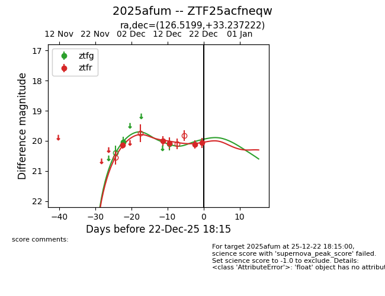
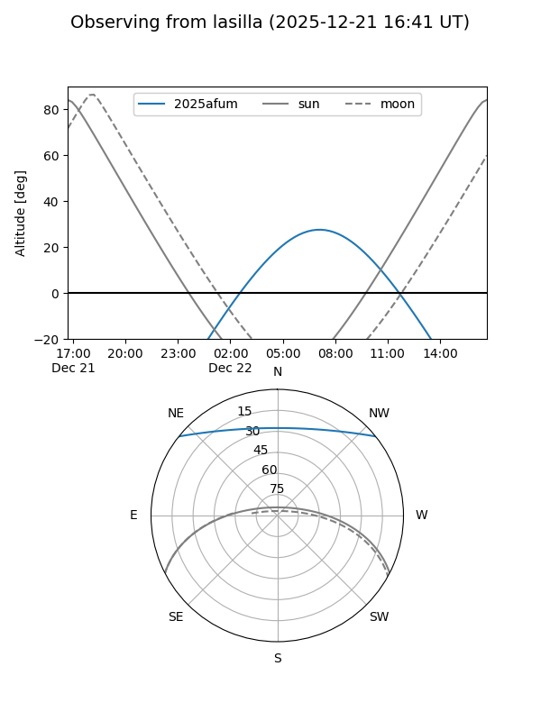
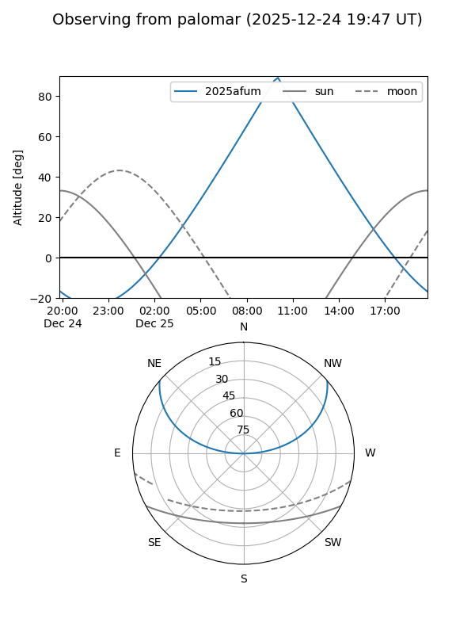
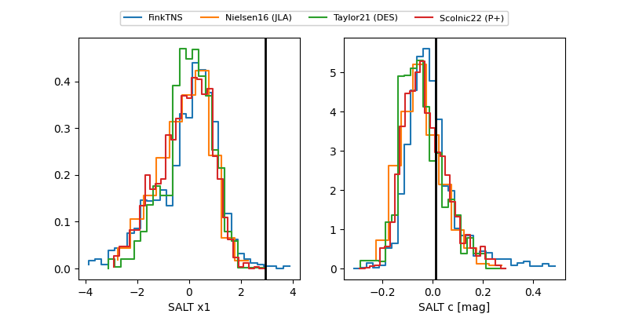

2025afum
Target 2025afum at 2025-12-20 11:21
Aliases and brokers:
FINK: fink-portal.org/ZTF25acfneqw
Lasair: lasair-ztf.lsst.ac.uk/objects/ZTF25acfneqw
ALeRCE: alerce.online/object/ZTF25acfneqw
TNS: wis-tns.org/object/2025afum
YSE: ziggy.ucolick.org/yse/transient_detail/2025afum
alt names
ZTF25acfneqw (ztf,fink_ztf)
2025afum (tns,yse)
Coordinates:
equatorial (ra, dec) = 126.5199,+33.23722
equatorial (HMS+DMS) = 08:26:04.77,+33:14:14.00
galactic (l, b) = (189.3288,+33.27541)
Flags:
Photometry:
last ztfg=20.10, ztfr=20.13
2 ztfg, 4 ztfr detections
Lightcurve

Visibility


Additional plots
